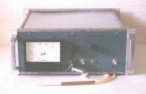
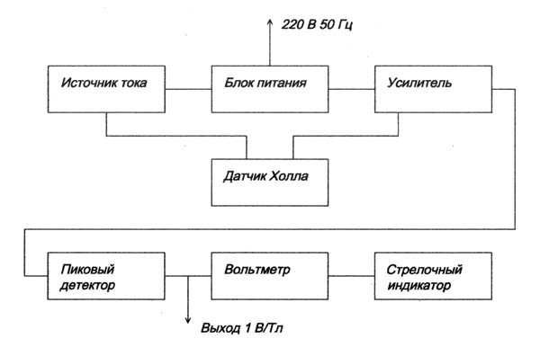

Аналоговый импульсный
тесламетр с датчиком Холла
типа ПХЭ для измерения индукции магнитного поля

Назначение
Аналоговый импульсный тесламетр предназначен для оперативного
измерения и контроля величины индукции постоянного, переменного низкочастотного
или импульсного магнитного поля с помощью датчика Холла типа ПХЭ606118В [1]. Он
может использоваться при измерении характеристик магнитных материалов
[2], при конструировании и ремонте магнитных систем
[3] и устройств с постоянными магнитами и
электромагнитами, для контроля и измерения амплитудных значений магнитной
индукции в различных установках [5 -
7], а также для построения измерительных установок и
комплексов [4].
Технические данные:
- диапазон измеряемых значений величины индукции магнитного
поля 0 ... 5000 мТл разбит на девять поддиапазонов: 0 ... 10, 0 ... 25, 0
... 50, 0 ... 100, 0 ... 250, 0 ... 500, 0 ... 1000, 0 ... 2500, 0 ... 5000
мТл; имеется указатель полярности и выход для подключения внешнего прибора
- погрешность измерения не более 2.5 % при нахождении
стрелки прибора в последней трети шкалы
- диапазон рабочих частот по индукции 0 ... 250 Гц; для
переменных магнитных полей измеряется среднее значение модуля индукции или
ее амплитуда; для импульсных магнитных полей измеряется амплитудное значение
индукции
- диапазон измеряемых значений величины магнитной индукции
на выходе для подключения внешнего прибора -13 ... +13 Тл, коэффициент
преобразования 1 В/Тл, погрешность преобразования не более 1 % в диапазоне
-10 ... +10 Тл
- в приборе могут использоваться датчики С- и М- типов,
имеется переключатель типа датчика
- питающая сеть однофазная напряжением 220 +
10 В
- частота питающей сети 50 + 1 Гц
- потребляемая мощность не более 25 В
∙ А
- прибор имеет естественное воздушное охлаждение, готов к
работе сразу после включения, время непрерывной работы не ограничено
- габаритные размеры не более 400 х 400 х 160 мм3
(без элементов управления и подключения)
- масса не более 6.5 кг
Устройство тесламетра
Блок-схема аналогового импульсного тесламетра с датчиком Холла
типа ПХЭ приведена на рис. 1.

Рис. 1. Блок-схема тесламетра.
Блок питания вырабатывает необходимые для питания узлов
прибора напряжения. Источник тока служит для стабилизации тока питания датчика
Холла (100 мА). Выходное напряжение с датчика Холла подается на инструментальный
усилитель. Усиленный сигнал (приведенный к уровню 1 Вольт/Тесла) подается на
пиковый детектор, к выходу которого подключен вольтметр со стрелочным
индикатором. Коэффициент преобразования вольтметра и, соответственно, диапазон
устанавливается с помощью ручного переключателя. Сигнал с усилителя может быть
также подан непосредственно на вольтметр в обход пикового детектора. В приборе
имеется выход для подключения внешнего прибора (милливольтметра, осциллографа),
с помощью которого можно измерять магнитную индукцию и контролировать форму
сигнала.
Ссылки:
- Датчик Холла ПХЭ606118В для измерения величины магнитной
индукции
- Изготовление и
применение магнитопластов (магнитоэластов)
- Магнитные
системы для намагничивания постоянных магнитов
- Приборы для
измерения магнитных полей
- Установки
импульсного намагничивания и размагничивания постоянных магнитов
- Установки и
устройства для размагничивания стали
- Устройства и
установки для генерации сильных импульсных магнитных полей
Словарь
терминов:
- Датчик Холла (преобразователь Холла) -
устройство для получения зависящего от магнитной индукции электрического
сигнала, принцип работы которого основан на эффекте Холла.
- Источник тока
- устройство для получения тока постоянной величины в нагрузке
переменного сопротивления.
- Магнитная индукция - вектор, численно
равный пределу отношения силы, действующей со стороны магнитного поля на
элемент проводника с электрическим током, к произведению тока и длины
элемента проводника, если длина этого элемента стремится к нулю, а элемент
так расположен в поле, что этот предел имеет наибольшее значение, и
направленный перпендикулярно к направлению элемента проводника и к
направлению силы, действующей на этот элемент со стороны магнитного поля,
причем из его конца вращение по кратчайшему расстоянию от направления силы к
направлению тока в элементе проводника должно быть видно происходящим против
часовой стрелки.
- Магнитное поле
- разновидность электромагнитного поля, создаваемая движущимися
электрическими зарядами или токами и оказывающая силовое воздействие на
движущиеся электрические заряды или токи.
- Пиковый детектор
- устройство, сигнал на выходе которого равен максимальному (или
минимальному) значению сигнала на входе.
- Тесламетр (гауссметр) - прибор для
измерения магнитной индукции.
- Эффект Холла - возникновение поперечного
электрического поля и разности потенциалов в проводнике или полупроводнике,
по которому проходит электрический ток, при помещении его в магнитное поле,
перпендикулярное направлению тока.
16.03.2004
06.09.2005
10.01.2007
18.02.2018
Альтернативные источники
энергии
Компьютеры и
Интернет
Магнитные поля
Механотронные системы
Перспективные
разработки
Электроника и
технология
Главная страница